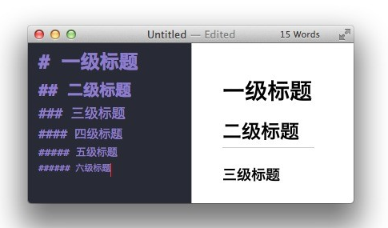

Markdown教程¶
工具准备¶
首先准备一款markdown编辑器，在网上搜索一下关键字，可以搜索到很多，百度百科已有人列出清单 ：
常用的Markdown 编辑器
常用语法¶
最常见的Markdown格式选项和键盘快捷键:
以下是源示例
| 输出后的效果 | Markdown | 快捷键 |
| ------------ | ---------------- | ------------------ |
| Bold | **text** | Ctrl/⌘ + B |
| *Emphasize* | *text* | Ctrl/⌘ + I |
| Link | [title](http://xx) | Ctrl/⌘ + K |
| Inline Code | `code js html` | Ctrl/⌘ + Shift + K |
| Image | | Ctrl/⌘ + Shift + I |
| List | * item | Ctrl + L |
| Blockquote | > quote | Ctrl + Q |
| H1 | # Heading | |
| H2 | ## Heading | Ctrl/⌘ + H |
| H3 | ### Heading | Ctrl/⌘ + H (x2) |
结果示例：
| 输出后的效果 | Markdown | 快捷键 |
|---|---|---|
| Bold 加粗 | text | Ctrl/⌘ + B |
| Emphasize 倾斜 | text | Ctrl/⌘ + I |
| Link 超连接 | title | Ctrl/⌘ + K |
| Inline Code 代码块 | code js html |
Ctrl/⌘ + Shift + K |
| Image 图片 | Ctrl/⌘ + Shift + I | |
| List 列表 | * item | Ctrl + L |
| Blockquote 引用 | > quote | Ctrl + Q |
| H1一级标题 | # Heading | |
| H2二级标题 | ## Heading | Ctrl/⌘ + H |
| H3三级标题 | ### Heading | Ctrl/⌘ + H (x2) |
文本样式¶
（带*星号的文本样式，在原版Markdown标准中不存在，但在其大部分衍生标准中被添加）
- 正常无标记文字
-
链接 :Title
-
加粗 :Bold
-
斜体字 :Italics
-
*高亮 :text
-
段落 : 段落之间空一行
-
换行符 : 一行结束时输入两个空格
-
列表 :* 添加星号成为一个新的列表项。
-
引用内容 :
> 引用内容 -
内嵌代码 :
alert('Hello World'); -
画水平线 (HR) : -----(或连续输入三个星号
***即可)
-
方框checkbox：- [ ]
-
字体与效果¶
标记：
粗字体 和 斜体 和 添加标签
添加标签粗体
添加标签斜体
我要删除之前写过的错误信息：我写错啦，删掉删掉
我是原谅绿,我是和Html标签一起使用的
我是加粗原谅绿
正文无标记的文字
我是斜斜的原谅绿
标签内添加Html也有效果
标记：
**粗字体** 和 *斜体* 和 `添加标签`
**`添加标签粗体`**
*`添加标签斜体`*
我要删除之前写过的错误信息：~~我写错啦，删掉删掉~~
<font color="green">我是原谅绿,我是和Html标签一起使用的</font>
**<font color="green">我是加粗原谅绿</font>**
正文无标记的文字
*<font color="green">我是斜斜的原谅绿</font>*
<font color="green">标签内添加<font color="red">Html</font>也有效果</font>
标题¶
标题能显示出文章的结构。行首插入1-6个 # ，每增加一个 # 表示更深入层次的内容，对应到标题的深度由 1-6 阶。
-
H1 :# Header 1
-
H2 :## Header 2
-
H3 :### Header 3
-
H4 :#### Header 4
-
H5 :##### Header 5
-
H6 :###### Header 6
标题效果¶
共有6个级别的标题
标记：
#一级标题
##二级标题
###三级标题
####四级标题
#####五级标题
######六级标题

生成目录¶
标记：
[TOC]
文字引用¶
鲁迅说过，吃饭拌肉汁，吃嘛嘛香
拿破仑说过，不喜欢吃麻辣烫的士兵不是好士兵
标记：
>鲁迅说过，吃饭拌肉汁，吃嘛嘛香
>拿破仑说过，不喜欢吃麻辣烫的士兵不是好士兵
另外引用是可以嵌套的，一个 > 符号是最外层，两个 > 符号是第一层嵌套，以此类推：
> 最外层
> > 第一层嵌套
> > > 第二层嵌套
显示结果如下：
最外层
第一层嵌套
第二层嵌套
段落首行缩进¶
首行缩进这个有必要说一说，markdown主要面向英文文档，所以没有特殊的'首行缩进'语法。在文本编辑器里面我们一般用一个Tab键，再不济就用空格，我们来看一下Tab和空格在markdown中的效果。
Tab键的效果：
这是Tab键产生的效果;不要怀疑，我确实加了一个Tab键，但是他喵的怎么看不到效果呢。还有，请勿乱用2个Tab键，2个Tab键绝不会出现缩进的效果，下面会说到2个Tab键是代码块。就像下面这样：
如果你离上一行之间有一行空行，那么2个Tab键就是一块代码块。不要怀疑，这就是一块代码块，这块代码块的背景是有淡淡的灰色的，如果你看不到，那可能是你显示器太亮了，代码块里面``(也就是我们添加标签的效果，也不会生效的)
空格键的效果： 这是空格键的效果;好像也没有效果
上面的两种方法都没有效果，现在告诉大家一个方法。很简单，加上``就好(简书不支持，很多blog都不支持)
真正的首行缩进 这是真的首行缩进哦。
标记：
这是真的首行缩进哦。
链接¶
1、链接到网站`
如果想要调用链接[百度](http://www.baidu.com),格式是`[显示内容](链接地址)
2、图片连接
展示图片的标记格式也和链接到网站的标记格式差不多
标记


-
开头一个感叹号 !
-
接着一个方括号，里面放上图片的替代文字
-
接着一个普通括号，里面放上图片的网址，最后还可以用引号包住并加上选择性的 'title' 属性的文字。
-
Markdown 还没有办法指定图片的高度与宽度，如果你需要的话，你可以使用普通的
标签。
<img src="http://img3.imgtn.bdimg.com/it/u=1750208429,1514486128&fm=26&gp=0.jpg" width="50%">

3、连接引用变量
这个链接用 1 作为网址变量 [Google][1]
这个链接用 baidu 作为网址变量 [baidu][baidu]
然后在文档的结尾为变量赋值（网址）
[1]: http://www.google.com/
[baidu]: http://www.baidu.com/
这个链接用 1 作为网址变量 Google 这个链接用 baidu作为网址变量 baidu 然后在文档的结尾为变量赋值（网址）
列表¶
1、无序的列表¶
- -生成的列表
- 子列表1(前面有一个Tab)
- 我(前面有一个Tab)
- 很(前面有两个Tab)
- 好(前面有三个Tab)
- 看(前面有四个Tab)
- 不好看
-
子列表2
-
*生成的列表1
-
*生成的列表2
-
+生成的列表1
- +生成的列表2
-、*、+`可以生成列表的符号,`-、*、+`后要加上`空格`才会生效，子列表前面要加上`Tab`键,生成子列表的关键就是加上`Tab
标记：
- -生成的列表
- 子列表1(前面有一个Tab)
- 我(前面有一个Tab)
- 很(前面有两个Tab)
- 好(前面有三个Tab)
- 看(前面有四个Tab)
- 不好看
- 子列表2
* *生成的列表1
* *生成的列表2
+ +生成的列表1
+ +生成的列表2
2、有序的列表¶
- 有序列表一(文字前面有空格哦) (1).我是子列表，但是我没有层级效果
- 有序列表二
- 有序列表三
数字加上.再加上空格，就变成了有序的列表。
标记：
1. 有序列表一(文字前面有空格哦)
(1).我是子列表，但是我没有层级效果
2. 有序列表二
3. 有序列表三
3、有序有层级列表¶
- 1.有序列表一
- 1.1 我是子列表，我有层级效果
- 1.2
- 2.有序列表二
- 3.有序列表三 哈哈，这是我自己想出来的，无序列表上加上数字；如果真的是要数字区分就可以这么做。
标记：
- 1.有序列表一
- 1.1 我是子列表，我有层级效果
- 1.2
- 2.有序列表二
- 3.有序列表三
表格¶
| 星期 | 1 | 2 | 3 | 4 | 5 | 6 | 7 |
|---|---|---|---|---|---|---|---|
| 早餐 | 香蕉牛奶燕麦粥 | 皮蛋瘦肉粥 | 蜂蜜小蛋糕 | 灌汤包 | 南瓜饼 | 肉末蛋羹 | 豆浆油条 |
| 中餐 | 爆炒鸡肝 | 笋干炒肉 | 箩卜炒肉 | 剁椒鱼头 | 葱油蛏子 | 风味蹄筋 | 珍珠丸子 |
| 晚餐 | 牛肉砂锅 | 虾皮炒海带 | 牛肉炒西芹 | 芝麻豆腐 | 香菇炒肉 | 土豆丝饼 | 叉烧肉 |
标记：
|星期|1|2|3|4|5|6|7|
|---|---|---|---|---|---|---|---|
|早餐|香蕉牛奶燕麦粥|皮蛋瘦肉粥|蜂蜜小蛋糕|灌汤包|南瓜饼|肉末蛋羹|豆浆油条|
|中餐|爆炒鸡肝|笋干炒肉|箩卜炒肉|剁椒鱼头|葱油蛏子|风味蹄筋|珍珠丸子|
|晚餐|牛肉砂锅|虾皮炒海带|牛肉炒西芹|芝麻豆腐|香菇炒肉|土豆丝饼|叉烧肉|
转义¶
Markdown 使用了很多特殊符号来表示特定的意义，如果需要显示特定的符号则需要使用转义字符，Markdown 使用反斜杠转义特殊字符：
**文本加粗**
\*\* 正常显示星号 \*\*
文本加粗 ** 正常显示星号 **
代码块¶
代码块可能由于网站的支持不同，会有不同的效果，但是代码块有三种书写的方式
1、Tab代码块¶
代码区块使用 4 个空格或者一个制表符（Tab 键）。
实例如下：

显示结果如下：
 ¶
¶
2、加强代码块¶
你也可以用 ``` 包裹一段代码，并指定一种语言（也可以不指定），技术人编写示例代码的必备标签
标记
```
加强的非特定语言的代码块
HTML
JS
C# JAVA
```
加强的非特定语言的代码块
HTML
JS
C# JAVA
特定的的代码块也可能由于网站的支持不同，会有不同的颜色高亮效果，也就是加上代码块的名字如```java
```java
public static void main(String[] args){
System.out.println("这是java语言代码块");
}
```
效果
public static void main(String[] args){
System.out.println("这是java语言代码块");
}
3、扩展代码块¶
其它扩展格式块,如```flow，这是流程图的代码块，直接生成流程图(需要第三方支持)
流程图样例
```flow
st=>start: 开始框
op=>operation: 处理框
cond=>condition: 判断框(是或否?)
sub1=>subroutine: 子流程
io=>inputoutput: 输入输出框
e=>end: 结束框
st->op->cond
cond(yes)->io->e
cond(no)->sub1(right)->op
```
st=>start: 开始框
op=>operation: 处理框
cond=>condition: 判断框(是或否?)
sub1=>subroutine: 子流程
io=>inputoutput: 输入输出框
e=>end: 结束框
st->op->cond
cond(yes)->io->e
cond(no)->sub1(right)->op
UML标准时序图样例
```mermaid
%% 时序图例子,-> 直线，-->虚线，->>实线箭头
sequenceDiagram
participant 张三
participant 李四
张三->王五: 王五你好吗？
loop 健康检查
王五->王五: 与疾病战斗
end
Note right of 王五: 合理 食物 <br/>看医生...
李四-->>张三: 很好!
王五->李四: 你怎么样?
李四-->王五: 很好!
```
%% 时序图例子,-> 直线，-->虚线，->>实线箭头
sequenceDiagram
participant 张三
participant 李四
张三->王五: 王五你好吗？
loop 健康检查
王五->王五: 与疾病战斗
end
Note right of 王五: 合理 食物 <br/>看医生...
李四-->>张三: 很好!
王五->李四: 你怎么样?
李四-->王五: 很好!
UML时序图源码复杂样例：
```sequence
Title: 标题：复杂使用
对象A->对象B: 对象B你好吗?（请求）
Note right of 对象B: 对象B的描述
Note left of 对象A: 对象A的描述(提示)
对象B-->对象A: 我很好(响应)
对象B->小三: 你好吗
小三-->>对象A: 对象B找我了
对象A->对象B: 你真的好吗？
Note over 小三,对象B: 我们是朋友
participant C
Note right of C: 没人陪我玩
```
Title: 标题：复杂使用
对象A->对象B: 对象B你好吗?（请求）
Note right of 对象B: 对象B的描述
Note left of 对象A: 对象A的描述(提示)
对象B-->对象A: 我很好(响应)
对象B->小三: 你好吗
小三-->>对象A: 对象B找我了
对象A->对象B: 你真的好吗？
Note over 小三,对象B: 我们是朋友
participant C
Note right of C: 没人陪我玩
甘特图样例
```mermaid
%% 语法示例
gantt
dateFormat YYYY-MM-DD
title 软件开发甘特图
section 设计
需求 :done, des1, 2014-01-06,2014-01-08
原型 :active, des2, 2014-01-09, 3d
UI设计 : des3, after des2, 5d
未来任务 : des4, after des3, 5d
section 开发
学习准备理解需求 :crit, done, 2014-01-06,24h
设计框架 :crit, done, after des2, 2d
开发 :crit, active, 3d
未来任务 :crit, 5d
耍 :2d
section 测试
功能测试 :active, a1, after des3, 3d
压力测试 :after a1 , 20h
测试报告 : 48h
```
%% 语法示例
gantt
dateFormat YYYY-MM-DD
title 软件开发甘特图
section 设计
需求 :done, des1, 2014-01-06,2014-01-08
原型 :active, des2, 2014-01-09, 3d
UI设计 : des3, after des2, 5d
未来任务 : des4, after des3, 5d
section 开发
学习准备理解需求 :crit, done, 2014-01-06,24h
设计框架 :crit, done, after des2, 2d
开发 :crit, active, 3d
未来任务 :crit, 5d
耍 :2d
section 测试
功能测试 :active, a1, after des3, 3d
压力测试 :after a1 , 20h
测试报告 : 48h
更多语法参考：流程图语法参考
特定的代码块能生成很多图形如序列图、甘特图等等，请看Cmd Markdown、mdadvance
公式¶
当你需要在编辑器中插入数学公式时，可以使用两个美元符 $$ 包裹 TeX 或 LaTeX 格式的数学公式来实现。提交后，问答和文章页会根据需要加载 Mathjax 对数学公式进行渲染。如：
$$
\mathbf{V}_1 \times \mathbf{V}_2 = \begin{vmatrix}
\mathbf{i} & \mathbf{j} & \mathbf{k} \\
\frac{\partial X}{\partial u} & \frac{\partial Y}{\partial u} & 0 \\
\frac{\partial X}{\partial v} & \frac{\partial Y}{\partial v} & 0 \\
\end{vmatrix}
${$tep1}{\style{visibility:hidden}{(x+1)(x+1)}}
$$
本文参考引用网址：
https://www.jianshu.com/p/9219979a33e1
https://www.runoob.com/markdown